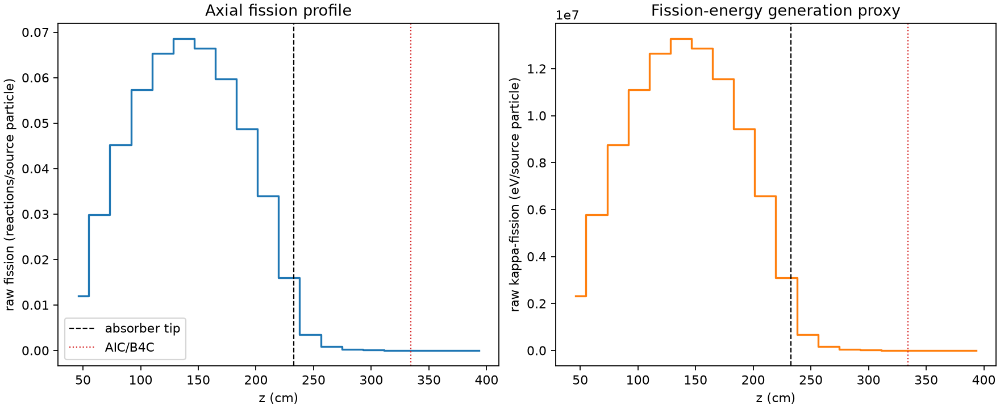
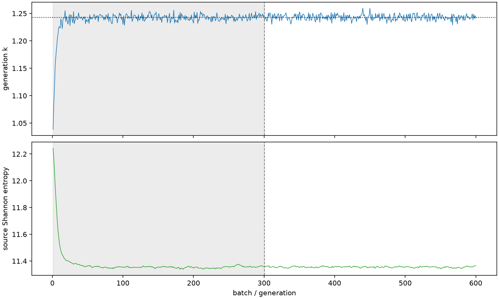

| field | value |
|---|---|
| experiment | V2-STAGE_256_OGRENCI_04-0032 |
| k | 1.242893988681007 |
| MC standard error | 0.00019534637730633697 |
| seconds | 947.0853715490084 |
| acceptance | not_assessed |
| convergence | review_required |
Completed is output integrity only; physical and statistical review required. Zero tallies do not prove zero production or zero uncertainty.
| diagnostic | value |
|---|---|
| geometric fuel voxels | 5280 |
| zero fission tally voxels | 474 |
| low signal fuel voxels | 1519 |
| low signal fission share | 0.00011765458723705111 |
| low signal kappa share | 0.00011770416639851027 |
| important fission share | 0.9501058244433599 |
| previous filter included | 3761 |
| duration estimate s | 1562.5173488400023 |
| actual minus estimate s | -615.4319772909939 |
| fission relative MC error | statistics |
|---|---|
| all_geometric_fuel | {"voxels": 5280, "positive_mean_voxels": 4806, "zero_mean_voxels": 474, "undefined_relative_error_voxels": 474, "median": 0.013327879679953018, "p95": 0.7933317892705123, "maximum": 1.0000000000000002} |
| low_signal | {"voxels": 1519, "positive_mean_voxels": 1045, "zero_mean_voxels": 474, "undefined_relative_error_voxels": 474, "median": 0.5292440928397963, "p95": 1.0, "maximum": 1.0000000000000002} |
| important_95pct | {"voxels": 2493, "positive_mean_voxels": 2493, "zero_mean_voxels": 0, "undefined_relative_error_voxels": 0, "median": 0.007811342749334368, "p95": 0.011929889999043684, "maximum": 0.017763630340264767} |
| outside_previous_filter | {"voxels": 1519, "positive_mean_voxels": 1045, "zero_mean_voxels": 474, "undefined_relative_error_voxels": 474, "median": 0.5292440928397963, "p95": 1.0, "maximum": 1.0000000000000002} |
| kappa_fission relative MC error | statistics |
|---|---|
| all_geometric_fuel | {"voxels": 5280, "positive_mean_voxels": 4806, "zero_mean_voxels": 474, "undefined_relative_error_voxels": 474, "median": 0.013313042438123682, "p95": 0.7927027437667751, "maximum": 1.0000000000000002} |
| low_signal | {"voxels": 1519, "positive_mean_voxels": 1045, "zero_mean_voxels": 474, "undefined_relative_error_voxels": 474, "median": 0.5272827542719473, "p95": 1.0, "maximum": 1.0000000000000002} |
| important_95pct | {"voxels": 2493, "positive_mean_voxels": 2493, "zero_mean_voxels": 0, "undefined_relative_error_voxels": 0, "median": 0.007802897059570932, "p95": 0.011916570566667669, "maximum": 0.01774283728541519} |
| outside_previous_filter | {"voxels": 1519, "positive_mean_voxels": 1045, "zero_mean_voxels": 474, "undefined_relative_error_voxels": 474, "median": 0.5272827542719473, "p95": 1.0, "maximum": 1.0000000000000002} |
| axial bin | fission share | kappa-fission share |
|---|---|---|
| 1 | 0.023482730974921203 | 0.0234836469883563 |
| 2 | 0.058845105589284234 | 0.058844790346482226 |
| 3 | 0.0889449525336074 | 0.08894447530730853 |
| 4 | 0.11302330814194536 | 0.11302270119306757 |
| 5 | 0.1286625746632613 | 0.1286617894875062 |
| 6 | 0.1349723025813122 | 0.13497159431027475 |
| 7 | 0.13097205488538102 | 0.13097133376430603 |
| 8 | 0.11761150808287643 | 0.11761086160038851 |
| 9 | 0.0958638284407268 | 0.09586337170532999 |
| 10 | 0.06696398079047995 | 0.06696365507880975 |
| 11 | 0.031586800585212536 | 0.031588152903816676 |
| 12 | 0.006801644579254338 | 0.006803640982725256 |
| 13 | 0.0016981922741664836 | 0.0016987701706593441 |
| 14 | 0.0004283279726191847 | 0.0004284661353645235 |
| 15 | 0.00010614780895712515 | 0.00010619010977631896 |
| 16 | 2.7822152436152604e-05 | 2.78366720991434e-05 |
| 17 | 6.731758482919602e-06 | 6.736218807521983e-06 |
| 18 | 1.7807882111398634e-06 | 1.7816466776876097e-06 |
| 19 | 1.5939294647842337e-07 | 1.5942792591460276e-07 |
| 20 | 4.600391766039326e-08 | 4.5950317933001514e-08 |
Histories include the inactive-to-active transition at batch 300. kappa-fission approximates fission energy production, not total heat deposition.

